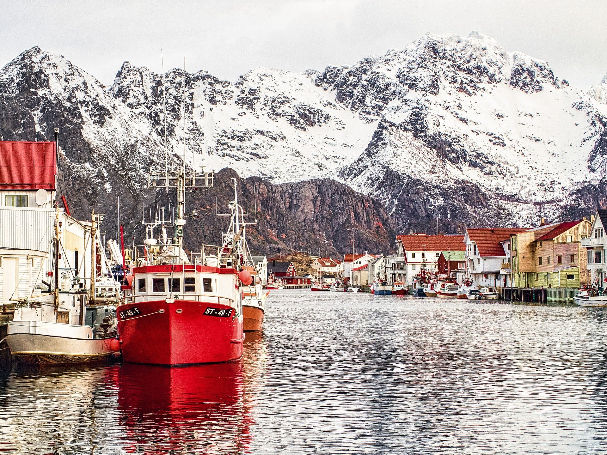

Where do we go?
10 days of travel and 5 unique places in Norway are waiting for us. Read more about each place from our itinerary below.
Expertly crafted tours to Norway. 10 days of admiring nordic cities. fjords, and waterfalls.
We offer guided tours in Norway - one of the most beautiful Nordic countries. We will cross the entire country, from Oslo to Tromsø, visit amazing cities, and see stunning nature.
The program is carefully thought out, there are no more than 10 people in each group plus an English-speaking guide. Comfortable vans and nights in 3*+ hotels are included in the price.

Some tour conditions may be changed according to the season. To learn more about the program, please contact us.

We conduct tours all year round, almost every week, but the most comfortable weather for sightseeing is in summer.

If necessary, we help you apply for a visa to Norway, as well as advise what things you should take with you.

It is believed that the name of this distinctive country nd one of the most breathtaking places on our planet was given by the Old-Norse word Norðrvegr, literally meaning "way to the north."
Norway is famous for green forests and mountains, pristine glaciers, noisy and cool waterfalls, lakes, beautiful fjords, white nights, and the polar lights. The beauty of Norway cannot be described in words!
Norway is also known for its striking landscapes, hunting, fishing, interesting and entertaining history, and culture . All this attracts travel lovers who come to Norway regardless of the season from all over the world.
10 days of travel and 5 unique places in Norway are waiting for us. Read more about each place from our itinerary below.

Oslo - First point
We start our journey from Oslo, the capital of Norway. On a walking tour, you will see the opera house, parliament, the royal palace, and more.
 - Dinner included
- Dinner included
 - Transfer from the airport
- Transfer from the airport
The beauty of Norway can hardly be overestimated. It has literally everything: glaciers, green forests, beaches. Come and see with your own eyes.


We tried to make our Norway tour as comfortable and interesting as possible. If you still have questions, you can contact us directly or fill out the form below.

TESTIMONIALS
Norway leaves no one indifferent. Its stunning nature, friendly people, beautiful cities, and delicious cuisine will be remembered forever.

I wanted to see Norvey since childhood when i saw a stylish hource right in the middle of the Norwegian forest in some magazine.I thought then that i olso want to live in such a house.This dream came true a few months ago on a tour of Norway. I am very happy!Thanks,guys!
October 28,2018

We went on this tourwith our daughter,she was 5 years old.I was worried that it would be difficult for her but everything went great.We spent nights in good hotels with excellent breakfasts.My Daughter always had something to eat,and the nature in Norway fascinated her even more than us!
May 13.2019

I still can't believe I have seen the Northern Lights with my own eyes!That was Incredible!When we arrived in Tromso,it was constantly snowing,the weather was bad,and the guide said that we were out of luck,most likely.But on the last night,right at midnight,the clouds left,and I saw it! It was magical!
January 12,2020